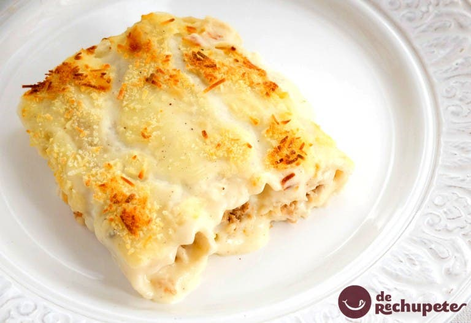

Canelones de San Esteban

El 26 de diciembre, coincidiendo con la festividad de San Esteban y día de Navidad, en los hogares catalanes hay
un plato que raramente falla en la mesa, los canelones de San Esteban o canelones de Navidad.
Según la amiga
Roser Herrera «sabes que ha llegado la Navidad cuando haces toneladas de canelones…» En Cataluña
tradicionalmente se prepara este plato como forma de aprovechamiento, de lujo diría yo, de los posibles restos
de la carne que haya sobrado de la cena de Nochebuena, donde lo tradicional es preparar la escudella y la carn
dólla.
Se trata de platos completos donde gran variedad de carnes, ternera, cerdo y gallina, se cocinan con patatas y
garbanzos. Pues bien, con los restos de carne se preparan estos canelones que son sutilmente diferentes a los
clásicos canelones de carne.
Ingredientes
- 175 g. de carne picada de cerdo
- 175 g. de carne picada de ternera
- 175 g. de pechuga de pollo
- 1 cebolla
- 2 dientes de ajo
- 100 ml. de coñac
- 125 g. de salsa de tomate
- 150 ml. de caldo de pollo
- 50 g. de paté de hígado de cerdo
- Sal (al gusto de cada casa)
- Aceite de olvia virgen extra
- Para la bechamel: 50g. de harina
- 1 cdita. de nuez moscada
- 4 cda. de mantequilla
- 1 l. de leche entera
- 36 canelones o Cannelloni Garofalo
- Queso rallado para gratinar
Preparación
- Comenzamos limpiando la pechuga de pollo de restos de grasa y troceándola en dados pequeños. Reservamos las
carnes.
- Pelamos la cebolla y la cortamos en dados.
- Calentamos 3 cucharadas de aceite de oliva en una sartén y añadimos la cebolla troceada y los ajos enteros y
sin pelar. Sofreímos la verdura durante unos 15 minutos, hasta que comience a ablandarse.
- Incorporamos la carne y la cocinamos durante 20 minutos, hasta que haya eliminado toda su agua y comience a
dorarse. Salamos. Agregamos el coñac y cocinamos unos minutos hasta que se evapore el alcohol.
- Añadimos el paté y removemos bien para integrarlo con la carne. Cocinamos 5 minutos más.
- Apagamos el fuego y trituramos la carne, por tandas con una batidora o un robot de cocina de tal forma que
nos quede como una crema espesa.
- Pasamos la carne triturada a un bol y añadimos la salsa de tomate y mezclamos bien.
- Agregamos caldo de pollo hasta que alcance la consistencia que queremos, de crema jugosa pero compacta.
Reservamos.
Cómo hacer la bechamel
- Preparamos la bechamel derritiendo la mantequilla en una sartén.
- Añadimos la harina y removiendo con unas varillas la cocinamos durante unos minutos.
- Salamos y vamos añadiendo la leche por tandas, integrándola con las varillas antes de seguir añadiendo más.
- Añadimos la nuez moscada y dejamos que la salsa se cocine durante 5 minutos. Apagamos y reservamos.
- Cocinamos las láminas de canelón siguiendo las indicaciones del fabricante.
- Una vez que estén listas las colocamos sobre un paño de algodón húmedo y las tapamos con otro paño también
humedecido. Así evitamos que se sequen y se rompan al manipularlas.
- Ponemos una cama de salsa bechamel en la fuente de horno que vayamos a utilizar y comenzamos a rellenar los
canelones.
- Colocamos una porción de relleno en cada lámina y enrollamos para hacer los cilindros de pasta. Vamos
colocando los canelones, con el cierre para arriba, en la fuente que hayamos elegido.
- Cubrimos los canelones con la salsa bechamel y espolvoreamos queso rallado.
- Con el horno precalentado a 1901C cocinamos los canelones durante 5 minutos.
- Pasado este tiempo subimos la bandeja a la parte superior del horno y gratinamos 10-15 minutos más.